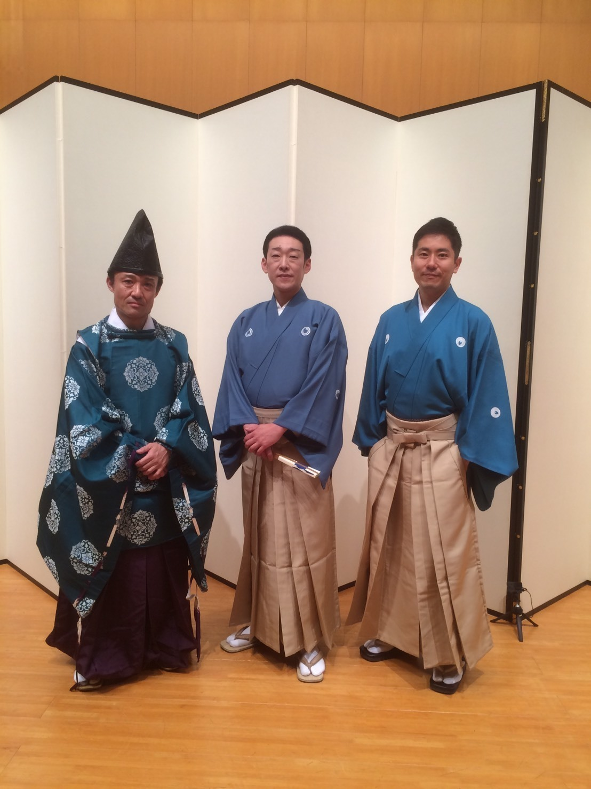
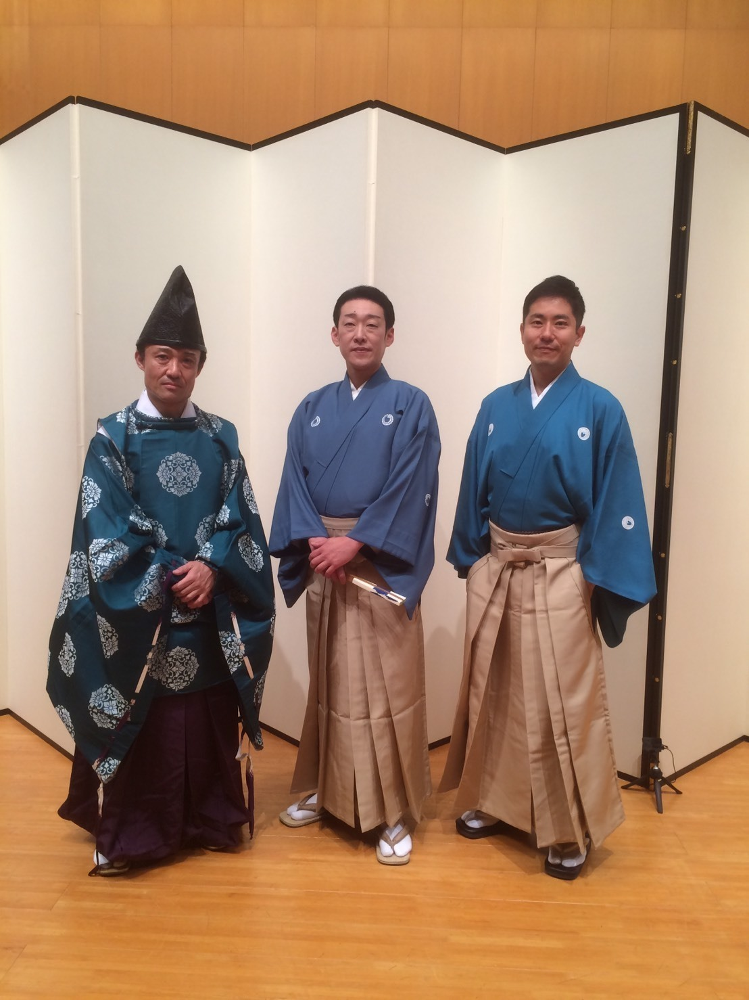

上記の動画はYOASOBIさんの「夜に駆ける」という曲を
宮内庁の宮内庁式部職楽部に所属しているプロの楽師さんにカバー演奏していただいたものです。
笙という雅楽器、そして現代でも馴染みのあるバイオリン・ピアノを用いて全ての楽器を一人で演奏しています。
現代の音楽に雅楽器がハマっていてとても綺麗ですよね！
皆さんは雅楽について知っていますか？
お正月の時に神社で流れている音楽も実は雅楽なんですよ。
ただ、普段からあまり身近には感じられないですよね。
雅楽のことについて知る機会もあまりないのではないでしょうか。
雅楽は、奈良時代に大陸から伝わってきたものを日本でアレンジして、
平安時代には大体の形は完成していました。
現代まで約1000年もの間受け継がれています。
そして、日本の最古の伝統芸能であり、なんと世界最古のオーケストラとも言われているんです。
今回は、そんな雅楽の面白さを皆さんに知ってほしい！という想いのもと、
先ほどのカバー動画を演奏してくださった、楽師の豐剛秋さんにインタビューをさせていただきました。
謎に包まれた雅楽の世界をどうぞ堪能してください。
宮内庁式部職楽部楽師
豊 剛秋（ぶんの たけあき）
普段は何をされているんですか？
本番に向けた練習をしています。
音楽家の国家公務員という特殊な立場ではあるんですけど、
いわゆる「演奏家」なので、演奏をすることが仕事です。
ちなみに本番というのは宮中祭祀や一般の方に向けたコンサートのことで、
いわゆる皇室のおまつりごとで演奏する、これが宮内庁の楽師の一番の仕事です！
宮中祭祀の中でも、勤労感謝の日にある新嘗祭（にいなめさい）が有名ですね。
5~10年に1回は、海外公演もしています！
また、宮内庁の楽師は、
雅楽と洋楽（いわゆるオーケストラ）の両方をやらなければならないんです！
こちらは一般の方に向けた公演はないのですが、
皇族の方が海外の要人を招待して晩餐会などを開くときは
バックグラウンドミュージックでオーケストラを演奏しています！
1日の流れを教えてください！
公務員という立場なので、いわゆる9時-5時的な(笑)
練習部屋が一人一部屋与えられているので、そこに出勤してひたすら自己練習をします。
また、午前中は学生に授業を、午後は１時間くらい合同練習をしています。
名刺をいただいた時に勤務先が皇居になっていたのですが、
皇居に勤務しているのですか？
そうです！
皇居の中に宮内庁楽部庁舎という施設があって、そこに練習部屋があります。
どういう経緯で雅楽を始めたのですか？
一番は私の家が代々笙という楽器を継承している家だったということですね。
しかし、父も祖父も曽祖父も楽師ではなく、違う職業についていました。
ただ、ピアノやバイオリンは小さな頃から習っていて、音楽がとても好きでした！
そこで音楽の基礎をつけさせてくれたなと思います。
また、親戚の家がずっと雅楽を続けていて、それも大きなきっかけの一つでしたね。
笙という楽器にはいつ触れたのですか？
15歳からです。
というのも、いわゆる宮内庁の楽師の養成課程（楽生課程）が15歳から始まるんです。
ですので、楽生課程に入った時から笙に触れていますね。
楽生課程では、毎日笙や唄や舞いなどの授業を受けます。
また、試験をパスしていって、7年目の卒業試験に受かると、楽師になれます。
楽生課程に入った時点で、将来雅楽をやるということは決めるのですか？
そうですね。
楽生課程に入った時点で、楽師を目指すということになります。
笙についてあまり馴染みがないのですが、どのような楽器なのでしょうか？
いわゆる吹奏楽器です。
つくりは、17本の煤竹に金属製のリードが一本ずつにはめられており、
その一本一本に吹き口という穴が空いています。
その穴を押さえて吹くことで音が出ます。
そして特徴ですが、一番は吸っても吐いても同じ音が出るところです！
ハーモニカは吸う時、吐く時と違う音ですが、笙は同じ音なんです。
とにかく呼吸をしながらずーっと吹き続けなければなりません。
そこが一番大変なところですね。
もう一つの大きな特徴としては、炭で温めなければ音が出ない（出にくい）というところです！
笙は人肌くらいに温めることで金属のリードが共鳴して、音が出るんです。
ですから、朝は最初に炭をおこして、笙を温めています。
これは夏や冬関係なくすることです。
火を起こせない時は、電熱器（コンロなど）でも温めますよ。
また、演奏中や演奏前後は、笙を手元でくるくる回して、リードや服に水滴をつけないように乾かすことが大切です。
乾かさないでそのままにしてしまうと、音がどんどん狂っていってしまうんです！
そして、乾かすということは、調律の意味も兼ねています。
笙は、ピアノのように調律師がいるわけではないので、音が狂ってしまった場合も演奏家自身でやらなければなりません。
先ほど朝は最初に笙を温めるとお話ししましたが、演奏後も必ず乾かすようにしています。

音程の違いは、竹の長さに関係しているのですか？
いえ、そうではありません。
竹の裏にリードがついているのと、
屏上という穴が空いているのですが、
そのリードと屏上の距離で音程が決まります。
また、この間演奏した夜に駆けるや最近の曲を演奏する時は、
自分で笙を改造しています！古典用の笙だとない音が出てくるんです！
新しくリードをつけたり、調律などをして改造しています。
笙は自分で組み立てたり、カスタムすることが可能なのでしょうか？
いや、流石に竹の部分を作ったり全体は職人の方に頼んでいますね。
ただ、リードは古典用の笙にしても自分で製作しなければならないんです。
リードの素材は、中国の銅鑼（どら）という楽器を使っています。
その銅鑼も、なかなか日本では見つからないので、
中国の骨董市に行って、そこで仕入れるんです！
リード作りは、銅鑼を金属用のノコギリで切るところから始まります。
そこだけは専門の方にお願いしていますね。
ただ、その後の作業は全て自分でやります。
ある程度の大きさまで銅鑼を切ってもらった後は、
砥石などですりおろしたりして、リードを作っていきます。
演奏と同じように、リードの制作もすごく大変です（笑）
その作業は演奏者の方が自分でやるものなのですか？
そうですね。笙奏者というのは、リードが切れて一人前と言われています。
雅楽の楽譜が全く読めなかったのですが、読み方を教えていただきたいです！
全部漢字なので、最初は驚くと思います。
しかし、その漢字は全てドレミファソラシドの
12音階に置き換えることが可能なんです。
また、小節も漢字の横にある黒丸で表現されています。
ですので、もともとピアノなどをされている方は案外馴染みやすいと思います！
雅楽の曲は、新しい曲を作曲していくのではなくて、昔からある曲を演奏するのでしょうか？
基本的にはその通りです。
平安時代からずっと伝えられている曲を演奏しています。
今現在でだいたい190曲くらい残っていて、
私たちもそれを伝えていくということをしています。
その190曲というのはどの時にどの曲を演奏するというのは決まっているのでしょうか？
そうですね。その通りです。
どの儀式の時にどの曲をやるというのは決まっています。
基本的にはその通りということは、新曲を作ることもあるのですか？
天皇が即位する時だけは新曲を作ります！
天皇が即位する年は行事の数も増えて私も2年前に経験しましたが、
まさに激務でとても大変でした。
そのたくさんの行事の中で新曲を作りました。
曲は私たち楽師が協力して作るもので、私もかなり関わりました！
新曲といっても、古典に乗っ取ったものにはなるのですが、
その中でも現代の感覚を結びつけたような、
ちょっと洒落の効いたメロディを少し挟んだりしましたね。
雅楽を少し聞いた時に、全部の曲が繋がっているように聞こえたのですが . . .
私たちのように長年演奏しているか、もしくはよっぽどの雅楽マニアの方でなければそれは仕方のないことだと思います（笑）
私は、雅楽の楽しみ方っていうのは、平安の雰囲気を感じたり、
難しいことを考えずに、極端な話眠ってしまっても良いと思うんですよ。
心地良いな、と。
音楽って雅楽に限らずやっぱりそういう作用があると思うので。
これからの雅楽についてお話を聞かせてください！
私自身、他ジャンルの方とコラボ演奏をしたり、ジャズと笙を
掛け合わせた曲の作曲をしたり、色々な活動をしていますが、
触れる手段はなんでも良いと思っています。
また、変な意味で伝統に胡座（あぐら）をかかずに、
守ることも大事ですが、
それと同様に現代の人に噛み砕いて
自分達から発信していくことも大切だなと思っています。
その噛み砕き方もそれぞれのやり方があっていいと思っていて。
皆さんには自由に雅楽を楽しんでもらいたいですね。
まさか眠りながら聞いても問題ないとのことなので
もしかすると睡眠導入BGMとしても楽しめるのかもしれないと思い、実際に試してみたのですが、
目を閉じて雅楽を聞いていると音のハモリ方がものすごく綺麗なことに気がつきました。
その後すぐ眠ってしまいました(笑)
皆さんもぜひお試しください！
豊さんは、ラジオフチューズ という放送局で毎週木曜22:15~ラジオ番組のパーソナリティをされているそうです！
雅楽と現代の融合ということで、豊さんの大好きなブラックミュージックと雅楽の両方が一気に楽しめる番組です！
こちらも是非聞いてみてください！
 
